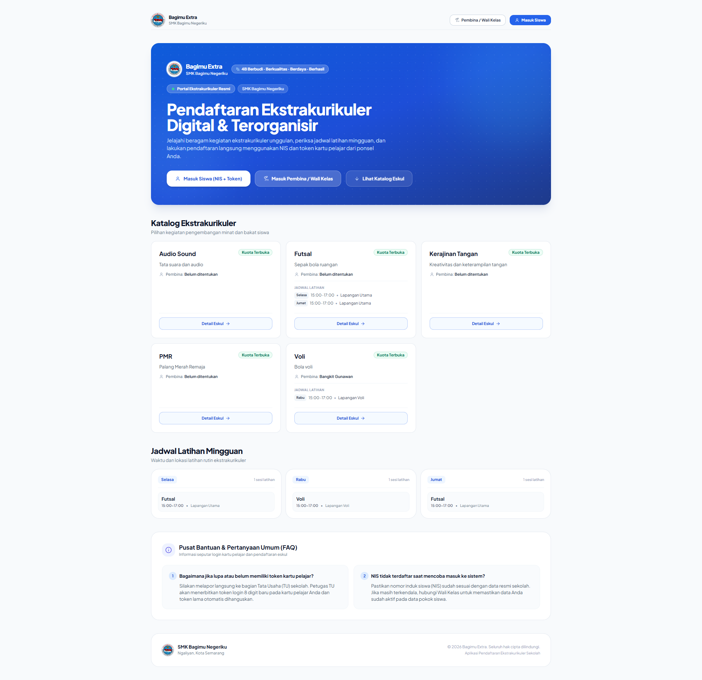

PROJECT 01
Extracurricular Management System (Bagimu Extra)
An integrated information and management system for school extracurricular activities at SMK Bagimu Negeriku. Features online student registration, digital QR-based attendance tracking, grade recapitulation, activity reporting, and automated WhatsApp notifications.